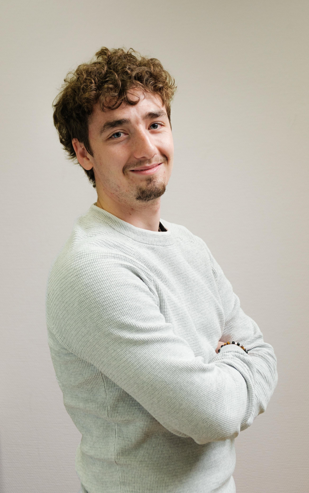
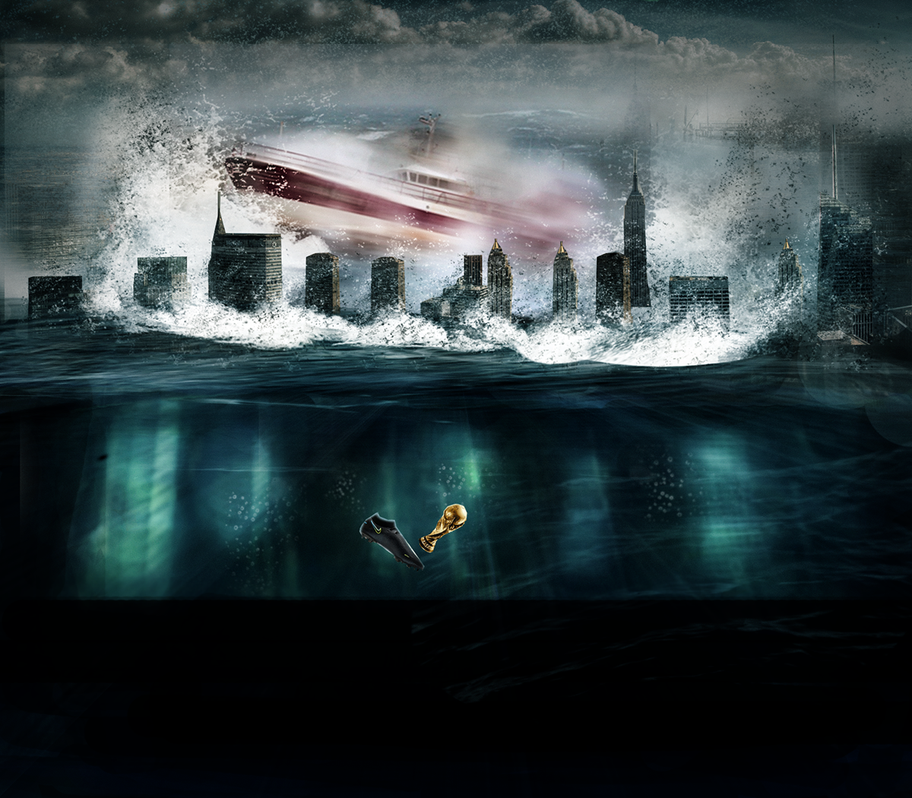
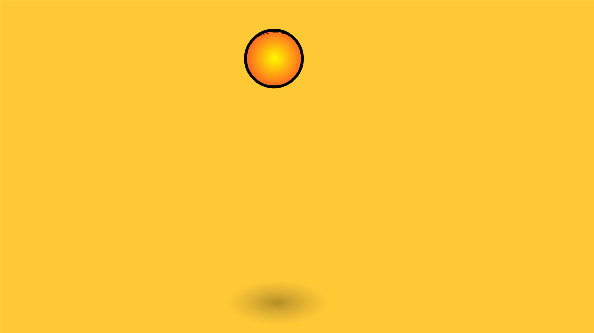

01 / 05
Reportage • Portrait • SportPhotographieVoir la galerie
01 / 05
Reportage • Portrait • SportPhotographieVoir la galerie
01 Portfolio créatif // Loïc Gex
Bienvenue dans mon univers.
« Les rêves des hommes ne meurent jamais. » — Marshall D. Teach, One Piece
Design graphique, photographie, vidéo et expériences digitales — à la croisée du réel, du manga et du futur.
Creative profile // 2026

Direction artistique✦Photographie✦Montage vidéo✦Identité visuelle✦Design digital✦
✦✦✦✦✦
02 Qui suis-je ?
Curieux par nature.
Créatif par conviction.
Je m’appelle Loïc Gex, j’ai 23 ans et j’ai obtenu mon CFC de médiamaticien le 24 juin 2026, au terme de quatre années de formation.
Avant de choisir cette voie, j’ai eu la chance de jouer au football à un niveau semi-professionnel à Barcelone. La pandémie de Covid-19 a rendu la poursuite de ce rêve difficile et j’ai aussi dû faire le choix de construire mon avenir professionnel. Cette expérience reste essentielle dans mon parcours : elle m’a appris le travail d’équipe, la communication, le calme et la capacité à m’adapter. Malgré ma timidité, elle m’a également aidé à prendre confiance en moi et à aller plus facilement vers les autres.
Avant mon apprentissage, j’ai effectué un préapprentissage chez 3Sheds afin de découvrir les métiers de la création. J’ai ensuite rejoint les Samaritains, où j’ai suivi mes quatre années de formation et développé mes compétences en graphisme, photographie, vidéo et communication.
Passionné par les jeux vidéo, les mangas, les anime, le sport et les univers futuristes, j’aime apprendre, expérimenter et découvrir de nouvelles manières de créer. Ce portfolio présente mon évolution, mes travaux personnels et les photographies que j’ai eu l’occasion de réaliser.
Mon objectif est de raconter une histoire avec chaque création — qu’il s’agisse d’une photo, d’une vidéo ou d’un visuel — et de faire naître une émotion dès le premier regard.
Boîte à outils
- 01 Adobe Photoshop Image & composition
- 02 Premiere Pro Montage & rythme
- 03 Illustrator Identité & vectoriel
- 04 Création web Design & interaction
03 Projets sélectionnés
Un terrain de jeu.
Plusieurs disciplines.
Des réalisations conçues durant mon apprentissage et mon préapprentissage. Ouvrez un chapitre pour découvrir chaque univers.
01 / 05
Reportage • Portrait • SportPhotographieVoir la galerie

02 / 05 Composition • ImaginaireCréationsVoir la galerie
03 / 05 Montage • Motion • StorytellingVidéo & GIFVoir les projets 04 / 05
Campagne • Réseaux sociauxCommunicationVoir la galerie
04 / 05
Campagne • Réseaux sociauxCommunicationVoir la galerie
04 Me contacter
Une idée en tête ?
Créons la suite.
Je suis disponible pour échanger autour d’un projet, d’une collaboration ou d’une opportunité dans le multimédia.
Écrivez-moilgex@icloud.com↗ Appelez-moi079 847 24 10↗Basé à Orbe, Suisse • Disponible pour de nouvelles opportunités